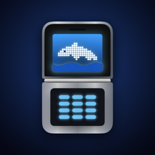

Privacy Policy
Old Flip Phone · Flip Retrô
Effective: October 25, 2026
Old Flip Phone ("Flip Retrô" in Brazil) is a retro flip phone app made by Rane Neto.
We don't collect any data
Old Flip Phone has no accounts, no ads, no analytics and no servers. Nothing you do in the app is sent to us or to anyone else.
Contacts
If you allow it, the app reads your contacts on your device to show them in its phone book. They are never copied, stored outside your device or sent anywhere. You can turn this off anytime in Settings > Privacy & Security > Contacts.
Phone calls
When you call someone from the app, the call is placed by your iPhone's own Phone app. The app doesn't record or log calls.
Texts
Texts you write in the app stay in the app and are not sent.
Children
The app collects no data from anyone, including children.
Changes
If this policy changes, we'll update this page and the date above.
Contact
Questions? Email suporte@enarlabs.com.br.
Política de Privacidade
Vigência: 25 de outubro de 2026
O Flip Retrô ("Old Flip Phone" nos EUA) é um app de celular flip retrô feito por Rane Neto.
Não coletamos nenhum dado
O Flip Retrô não tem cadastro, anúncios, análise de uso nem servidores. Nada do que você faz no app é enviado para nós nem para ninguém.
Contatos
Se você permitir, o app lê seus contatos no próprio aparelho para mostrá-los na agenda. Eles nunca são copiados, guardados fora do aparelho ou enviados. Você pode desligar isso a qualquer momento em Ajustes > Privacidade e Segurança > Contatos.
Ligações
Quando você liga pelo app, a ligação é feita pelo app Telefone do iPhone. O app não grava nem registra ligações.
Torpedos
Os torpedos escritos no app ficam no app e não são enviados.
Crianças
O app não coleta dados de ninguém, inclusive de crianças.
Mudanças
Se esta política mudar, atualizamos esta página e a data acima.
Contato
Dúvidas? Escreva para suporte@enarlabs.com.br.